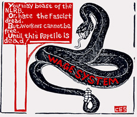

Berry Picking in Oregon
By Arthur J Miller
Every city has a skid road all its own. Portland's skid road happens to be called Burnside. During harvest season, Burnside is really booming, for its streets are filled with fruit tramps, winos and other assorted personnel. Along the streets are a number of cheap flophouses, a few check stores, a number of greasy spoons and bars, and let us not forget the few who have had too much and are spread out on the sidewalks passed out with empty "mickies" (bottles of Tokay) clutched in their fists.
There's a group of people in Oregon who look upon Burnside with a smile across their faces. They are the parasites, the berry kings for whom Burnside is a cheap source of labor. The agriculture industry in Oregon is one of the big money makers in the state. Junior high school kids are taught that it is their patriotic duty to pick berries; during the harvesting season, teachers are used as squad leaders for their students. But the major source of cheap labor are the fruit camps; thus every morning about 2 am the berry buses begin to arrive at Burnside.
There is one other source of labor that the berry kings depend on, and that comes from Texas. Each year they send buses down south, fill them up with berry pickers and ship them up to Oregon where the pickers find miserable camps waiting for them. One year the state of Oregon passed some law about the camps, to which the bosses responded by evicting the pickers and dumping them on Burnside.
Meanwhile, back on Burnside, when the first buses arrive, the winos and fruit tramps climb aboard and use the buses for their sleeping quarters, since the bars close at 2 a.m. Around 3:30 the bus drivers have to start hustling to get the remaining pickers needed. You can hear the drivers calling out as they try to sell the berry farms: Big raspberries, raspberry pickers wanted! Moganberry pickers wanted, big moganberries!" Some drivers offer free wine to get pickers onto the buses. The drivers usually earn from $20 to $25 for doing no more than the above work, driving the pickers out to the farms and returning them to Burnside.
The bus ride takes around 45 minutes. Pickers mostly get some shuteye on the ride. A few talk and a few more sneak a drink. This was my chance to talk a little to the fruit tramps. Most of the older fruit tramps come from other countries, as you can tell by the variety of accents. Among the others are many Texans, and a number of Indians who have come from as far away as Michigan.
Fruit tramps are good storytellers. Take, for example, an old Irishman with sunburned skin, gray hair, long whiskers, and bloodshot eyes to match his reddened skin. He was partnered up with this other fellow who was always tending him, mainly to dry him out. He told of a life of boxcars and open spaces with nothing to hold him back from what he wanted to do -- so he said. Most fruit tramps still travel by boxcar from harvest to harvest, as it is still, for most, their only means of transportation. A few will gang up in old beatup cars and share the cost of gas and upkeep.
When the buses reach the berry fields, most of the pickers leave the buses and slowly make their way to the chuck wagon. There are always a few who don't have the ambition to get off the bus, so they remain there either asleep or passed out.
At the chuck wagon, they're given free coffee to sober them up. Some eat something that is said to be a breakfast, while to others breakfast is simply a can of Oly or a micky. When the sun rises at last, the pickers gather their berry buckets and flats. The bus drivers, in their other role of row boss, assign the pickers to a row. Sometimes you are assigned to a heavy row of berries, other times you're stuck with a scattered row very thin in fruit. So whether or not you make much money depends on what kind of row you're assigned.
At the beginning of the raspberry season, the owners were paying 7 cents a pound, with a raise later to 8 cents a pound. Under the circumstances it is inevitable that some pickers throw dirt, pebbles, and green berries in to increase the weight, and hence their pay. So if you happen to get a basket of berries with a little extraneous matter in it, just think of the conditions under which they were picked, and don't think too badly of the "direct-actionist" who has thus left their calling card.
Some of the pickers go out to earn enough for something to eat, plus cigarettes and a few mickies, then go off to a deserted row of berry bushes and drink themselves to sleep. It is illegal to sell booze at the berry farms, but bootlegging is a fashionable practice with the owners, who sober up the winos only to get their money back by selling them booze to get drunk again. They keep them on this treadmill so that they have to work more to get more booze.
The popular phrase used by the row bosses is "no picky, no micky". One time I noticed a wino stagger up with his flat to the weigh in, got his money, took two steps away, and fell flat on his face, passed out from one too many mickies. Similar things can be witnessed at the berry farms every day.
The difference between the winos and the fruit tramps is that the winos care only about their daily ration of mickies, whereas the fruit tramps are also trying to make a stake to hold them through the winter months. This was my purpose in picking fruit, to make a stake to hold me over to my next job. I had been bumming my way through the Sierras, picking up odd jobs here and there, flopped in Lee Vining for a while, then made my way to Oakland for a few weeks of day labor.
After that ran slow I headed out to Portland for the raspberry harvest. When your on the bum, it is not a good idea to stick around any one place for very long. Just passing through is the prime directive in life. When there is work to be done, the man is always glad to see you, but when the work runs out you are viewed like a bed bug, a small menace to mankind.
One of the main hazards of farm work is the pesticides on the produce. It is applied so damn heavily that it creeps into your throat and lungs. You can taste the foul stuff in your mouth after picking for a while, and can smell it on your hands and on your clothes. Back in those days there were no warnings about its harm and not one bit of protection. Some of the more together fruit tramps would wrap bandanas around their heads covering their noses and mouths.
The berry kings refused to work pickers more than 46 hours a week, since it is the law that any time over 50 hours per week, in farm work, must be paid as overtime. There is no overtime pay in the fields, and, of course, no social security benefits. When you're too old to work you just find a flop somewhere and holdup until you die. Don't count on the berry kings or society to care about some old "bum", you're just a blight upon the community, the better folks say.
To pass the time away while picking berries, there is only gabbing and fruit tramp philosophizing. One stiff will say he ain't much worried about not making much money picking berries this year because he has heard that the pickles (cucumbers) will be running wild in a month or so and he'll make his stake there. You'll hear a lot about harassment from the bulls (cops).
One story floating around was about an Oakie who had been a seasonal picker in Oregon. She had gone off and married herself a bull whose beat was Burnside. It is a regular pastime for the bulls to hit the winos and fruit tramps in the stomach with their clubs, breaking the micky bottles hidden underneath their coats, thus effectively cutting up the stiff's stomachs. Oakie had heard that her husband had done this to some of her old partners and she got so mad at him she pulled a gun on him. They had themselves a little shootout, and both got themselves wounded; the bull got the worst of it though, and spent some time in the hospital. Oakie became a hero down on Burnside, and the story is often told of how the bull got his from the gun of Oakie the fruit tramp gal.
The fruit pickers are not at all satisfied with this way off life, and you don't find them all silently accepting it. At one point in the season a group of Indians were planning to strike for better conditions, but unfortunately this particular action didn't materialize.
At the end of the day, the pickers return to the buses and ride back to Burnside. Along the way, the bus driver always stops at a particular store. The berry pickers go into the store and buy their mickies or beer, while the driver collects his kickback of two free six-packs. There are those who say that these people are worthless and do not want a better life. The people that say this do not know the fruit tramps, and furthermore are not giving much thought to where their everyday produce comes from.
Most fruit tramps fall into this work from lack of education and have no opportunity to enter the mainstream of modern economic life. They do the best they can to survive, and to make their lives more bearable they drink. Drink numbs the reality around them. Surely there are those among them who would live this way regardless, but their numbers are very few. Must our society feed itself by creating a down and out class of people who must suffer from want and horrid conditions? The berry kings seem to think so, as they grow rich from the dwellers of the skid roads and inhuman labor camps.
The bus comes back into Portland, back down to Burnside and dumps its human cargo on to the skid road. When the berry harvest season is over the bulls will "run the bums out of town".
Since I have left that place I have not eaten raspberries, for I cannot look at a raspberry without thinking about Burnside and the things I saw as just another fruit tramp. I have but only one last thought: Who in the hell likes raspberries anyway?"